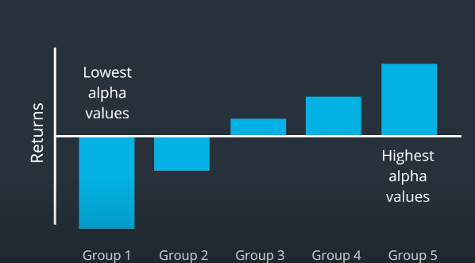

Alpha Factors
Table of Contents
1 Overview
- The search for alpha factors is essentially the search for deviations from the efficient market hypothesis.
1.1 Processing Techniques
Techniques to turn the alpha vectors into signals.
- Sector neutralization
- Ranking
- Z-scoring
- Smoothing
- Conditioning
1.2 Goal
Use risk models to neutralize exposure to risk factors, so that remaining portfolio returns and volatility are due to alpha factors.
1.3 Alpha Model
An algorithm that transforms data into numbers associated with each asset.
1.4 Real World Alpha Research Flow
- Propose alpha factors, then evaluate them.
- Out of sample testing
- Paper trading
- Put into a real portfolio
2 Ideas
2.1 Academic Papers
Why
- Idea generation
- Baseline for comparison
- New methods
- New sources of data / novel ways to work with data
Where
- General interest journals
- Investment journals
- Open source journals
How
- Use citations to find other related works.
- Focus on papers that can be replicated.
- Check if methodology is practical.
2.2 Fundamental Law of Active Management
\[IR=IC\times \sqrt{B}\]
- IR: information ratio
- IC: information coefficient
- B: Breadth - is the number of independent trading opportunities annualized.
- Long 30 oil stocks, short 30 semiconductor stocks. 1 bet.
- To maximize number of independent bets, remove exposure to risk factors
Two Ways to Improve Information Ratio
- Improve alpha factor(IC) very challenging
- Increase number of trades(breadth) quants' advantage
3 Standardization
- Ranking is a broadly useful method for making data analysis more robust.
- Makes our alpha vectors more robust against outliers and noise.
- Best to use when all alpha vectors are generated from the same stock universe
- Z-Score
- Not robust against outliers and noise
- Useful to apply ranking and then z-scoring, when alpha vectors are generated from different stock universes.
- Smoothing
- Rolling window average
- Weighted moving average: \(\alpha_{t,smoothed}=\frac{(T\times \alpha_t)+((T-1)\times \alpha_{t-1})+\cdots+(1\times{\alpha_{t-T+1}})}{T+(T-1)+\cdots+1}\)
4 Evaluation Metrics
- Factor returns
- Sharpe ratio
- Information coefficient
- Information ratio
- Quantile analysis
- Turnover analysis
4.1 Factor Returns
- Return Denominator: \(R_D=\sum_{t=1}^T |\alpha_t|\)
- Leverage Ratio: \(L_R=\frac{positions}{capital}\)
4.2 Sharpe Ratio
\[S_\alpha=\frac{mean(f)}{sample\_std(f)}\times \sqrt{252}\]
4.3 Rank Information Coefficient(rank IC)
Rank IC is a useful metric that tells us whether the ranks of our alpha values are correlated with the ranks of the future returns.
- It these returns are highly correlated, the Rank IC will be close to 1.
Steps
- Raw Alpha Vector
- Ranks of Alpha Vector
- Calculate the Forward Asset Returns and rank them.
4.4 Information Ratio
The information ratio is the Sharpe ratio applied to the specific return. \[IR=\sqrt{252}\times\frac{mean(s)}{std(s)}\]
4.5 Turnover Analysis
Factor Rank Autocorrelation is measuring how stable the ranked alpha vectors are from day to day.
- Calculate the correlation between ranked alpha vector(t-1) and ranked alpha vector(t).
- High FRA -> lower turnover
4.6 Quantile Analysis
- Ideal quantile analysis

4.7 Transfer Coefficient
The transfer coefficient measures how closely the optimized portfolio weights match the original alpha vector.
If after optimization, the risk model significantly changes the weights for stock so that they no longer follow the weights chosen by Alpha Vector. Then we can't expect the performance of the alpha factor to carry over into the portfolio.
5 Neutralization
The most significant risk factors are market risk and sector risk
- Neutralize by market (market mean)
- Neutralize by sector (sector mean)
- Repeat for all sectors in stock universe
6 Conditional Factors
\[\alpha_a\times \alpha_b\] Video